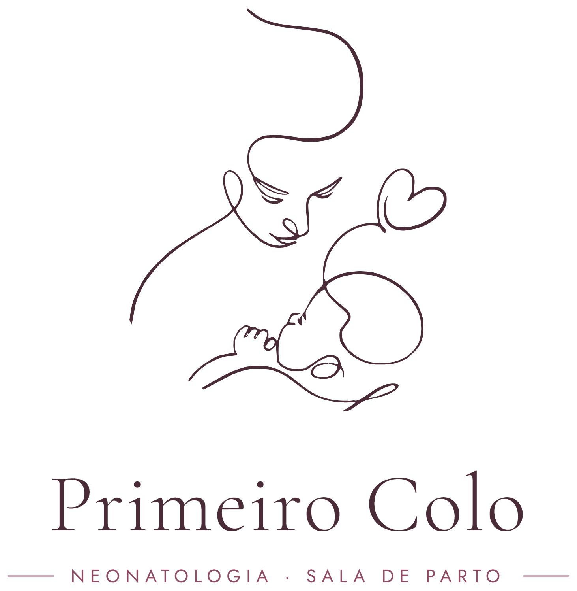

NOVEMBRO ROXO · MÊS DA PREMATURIDADE
Dra. Raquel Machado
PEDIATRA · NEONATOLOGISTA
CRM-RN 9383 · RQE Pediatria 6247 · RQE Neonatologia 6248

QUEM FALA
2012–2017
Médica pela UFRN
2018–2021
Pediatra pelo Hospital de Clínicas da Unicamp
2021–2023
Neonatologista pelo CAISM Unicamp
HOJE
Mãe de duas meninas
ONDE ATUO
Sala de parto

UTI neonatal
Consultório
2
CASO CLÍNICO
Um prematuro de 27 semanas chega à primeira consulta. A mãe diz:
“Me falaram que ele precisou ser reanimado. Isso pode afetar o desenvolvimento?”
No registro do nascimento, encontramos apenas:
Apgar 3/7
Se vocês pudessem telefonar para quem estava na sala de parto, o que perguntariam?
3
A PERGUNTA DESTA CONVERSA
01
Clampeamento do cordão
02
Normotermia
03
CPAP precoce e intubação
04
Aspiração de vias aéreas
05
Oxigenoterapia
4
01 · CLAMPEAMENTO DO CORDÃO
RECOMENDAÇÃO
PRN-SBP 2026: clampeamento ≥ 60 segundos para o prematuro < 34 semanas com boa vitalidade.
−32%
de mortalidade · OR 0,68; IC95% 0,51–0,91 · 20 ensaios, 3.260 RN < 37 sem
↑
volemia e hemoglobina
NO CONSULTÓRIO
Tempo e motivo do clampeamento dão contexto ao nascimento.
60
SEGUNDOS
Fonte: PRN-SBP 2026, p. 9.
5
02 · NORMOTERMIA
Revisão sistemática, 32 estudos observacionais, mais de 300.000 RN < 32 semanas. Hipotermia (< 36,0 °C):
+55%
Mortalidade
ORaj 1,55
IC95% 1,29–1,87
+13%
DBP
+37%
HPIV
+55%
ROP
+32%
Sepse
Quanto menor o peso, maior o efeito.
NO CONSULTÓRIO
A temperatura de admissão é um dado que deveria chegar ao follow-up.
Fonte: PRN-SBP 2026, p. 12.
6
02 · NORMOTERMIA
1
Sala de parto a 23–25 °C. Evitar correntes de ar e portas abrindo e fechando.
2
Aquecer o bebê ainda ligado ao cordão. Secar a cabeça e cobrir com plástico estéril e campo aquecido, sem inserir o corpo no saco.
3
Pele a pele só no prematuro moderado (32+0 a 33+6 semanas), com aferição de temperatura a cada 10 min.
4
Na mesa de reanimação: saco plástico e touca dupla. Gases umidificados aquecidos.
5
Colchão térmico em menores de 30 semanas.
Evitar também temperatura axilar acima de 38 °C.
Por quê
Pele fina e pouco queratinizada, pouco tecido adiposo, grande superfície corporal, resposta limitada ao frio e perda de calor pela fontanela.
PRN-SBP 2026, p. 7
Fonte: PRN-SBP 2026.
7
03 · SUPORTE RESPIRATÓRIO
O suporte respiratório escolhido ao nascer deixa um efeito depois da alta?
×
“Nesse contexto, há grande preocupação em diminuir a frequência da intubação traqueal em sala de parto.”
PRN-SBP 2026, p. 22
1 em 20
CPAP em vez de intubação (24–30 sem): 1 a mais sobrevive sem DBP a cada 20 tratados. (p. 17)
NO CONSULTÓRIO
Saber por que foi intubado dá contexto à reanimação.
Fonte: PRN-SBP 2026, p. 17 e 22.
8
04 · ASPIRAÇÃO DE VIAS AÉREAS
“Assim, a aspiração de boca e narinas não é recomendada de rotina para RN < 34 semanas.”
PRN-SBP 2026, p. 13
NA SALA DE PARTO
bradicardia
apneia
hipoxemia
hipercapnia
lesão de mucosa
infecção
↑ pressão intracraniana
lesão cerebral
Reservar para obstrução por secreção.
NO CONSULTÓRIO
Estímulos orais negativos e repetidos. A boca do recém-nascido é muito sensível.
Possível elo com recusa oral e aversão oral, e transição mais difícil para seio ou mamadeira.
Associação descrita em revisão de literatura, sem dados quantitativos.
Fontes: PRN-SBP 2026, p. 13; Pagliaro CL et al. J Pediatr (Rio J) 2016;92:7–14.
9
05 · OXIGENOTERAPIA
Faltar oxigênio faz mal. Sobrar também. A diretriz pede titulação pela oximetria.
SpO2 PRÉ-DUCTAL ALVO
2 min
65–70%
3 min
70–75%
4 min
75–80%
5 min
80–85%
10 min
85–95%
50%
75%
100%
NO CONSULTÓRIO
Pedir: FiO2 inicial, SpO2 aos 5 e 10 minutos e FiO2 máxima usada.
COMO
VPP começa com FiO2 60%, blender obrigatório, ajuste de 20% a cada 30 s. Reduzir assim que possível.
O QUE A EVIDÊNCIA MOSTRA
FiO2 0,60 atingiu mais o alvo de SpO2 e FC ≥ 100 aos 5 min, e precisou de menos massagem e adrenalina. O desfecho principal (morte ou lesão cerebral até 36 sem) foi igual: 47% vs 48%. Não atingir SpO2 ≥ 80% aos 5 min associa-se a morte e lesão cerebral. (TORPIDO 30/60, 23–28 sem)
O QUE AINDA NÃO SABEMOS
O estudo HiLo, em andamento, avalia a sobrevida sem sequela maior aos 18–24 meses.
Fonte: PRN-SBP 2026.
10
06 · COMO DESCREVER A REANIMAÇÃO
RELATO A
Apgar 3/7
RNPT nasceu hipotônico e sem movimentos respiratórios. Estímulo tátil pelo obstetra, sem melhora. Cordão clampeado em 15 segundos, coberto com plástico e campo aquecido. Posicionado no berço aquecido, touca dupla e saco plástico. FC < 100 bpm e respiração irregular: VPP com máscara, FiO2 60%, com boa resposta após o primeiro ciclo. FC > 100 bpm e respiração regular. CPAP com PEEP 6 e FiO2 60%, titulada até 30%, com SatO2 90% no décimo minuto. Encaminhado para a UTIN. Temperatura axilar 36,7 °C.
RELATO B
Apgar 3/7
RNPT nasceu hipotônico e sem movimentos respiratórios. Estímulo tátil pelo obstetra, sem melhora. Cordão clampeado em 15 segundos, coberto com plástico e campo aquecido. Posicionado no berço aquecido, touca dupla e saco plástico. Aspiradas as vias aéreas. FC < 100 bpm e respiração irregular: VPP com máscara, FiO2 60%, sem resposta. Checada a técnica e feito novo ciclo, sem melhora de FC, respiração e tônus. Intubação orotraqueal, TOT 2,5, na segunda tentativa, com queda de SatO2 até 30%. Após a IOT, FiO2 titulada até 100% para SatO2 90% no décimo minuto. Encaminhado para a UTIN intubado. Temperatura axilar 35,2 °C.
Concordam que é o mesmo Apgar?
11
CONCLUSÃO DO CASO
| Item | Relato A | Relato B |
|---|---|---|
| Aspiração de vias aéreas | Não | Sim, sem indicação descrita (não é de rotina) |
| Ventilação | Máscara, boa resposta no 1º ciclo | Máscara sem resposta, intubação na 2ª tentativa |
| Dessaturação | Não relatada | SatO2 até 30% na intubação (31% das tentativas) |
| Oxigênio | 60% titulado até 30% | Titulado até 100% |
| Temperatura de admissão | 36,7 °C (normotermia) | 35,2 °C (hipotermia: mortalidade +55%, HPIV +37%, DBP +13%, ROP +55%, sepse +32%) |
| Suporte na chegada à UTI | CPAP | Intubado |
O Apgar resume a resposta do bebê. Só o relato conta o que foi feito.
NO CONSULTÓRIO
O relato muda o que eu pergunto e onde olho com mais atenção no seguimento.
Fonte: PRN-SBP 2026.
12
DE VOLTA AO CASO
01
Quanto tempo se esperou para clampear? Por quê?
02
Qual foi a temperatura na admissão?
03
Precisou de CPAP ou de intubação? Por quê? Em qual tentativa?
04
Foi aspirado? Quantas vezes, e por quê?
05
Qual FiO2 usada e qual SpO2 aos 5 e 10 minutos?
Modelo de registro: Boletim de Apgar ampliado, PRN-SBP 2026, Anexo 6.
13

Dra. Raquel Machado
CRM-RN 9383 · RQE Pediatria 6247 · RQE Neonatologia 6248
NOVEMBRO ROXO · MÊS DA PREMATURIDADE
www.raquelmachadoped.com.br
1. Guinsburg R, Almeida MFB; Coordenadores Estaduais do PRN-SBP; Grupo Executivo do PRN-SBP; Departamento de Neonatologia da SBP. Reanimação do recém-nascido <34 semanas em sala de parto: diretrizes 2026 da Sociedade Brasileira de Pediatria. Rio de Janeiro: SBP; 2026. DOI 10.25060/PRN-SBP-2026-2.
2. Pagliaro CL, Bühler KEB, Ibidi SM, Limongi SCO. Dietary transition difficulties in preterm infants: critical literature review. J Pediatr (Rio J). 2016;92(1):7–14. DOI 10.1016/j.jped.2015.05.004.
15